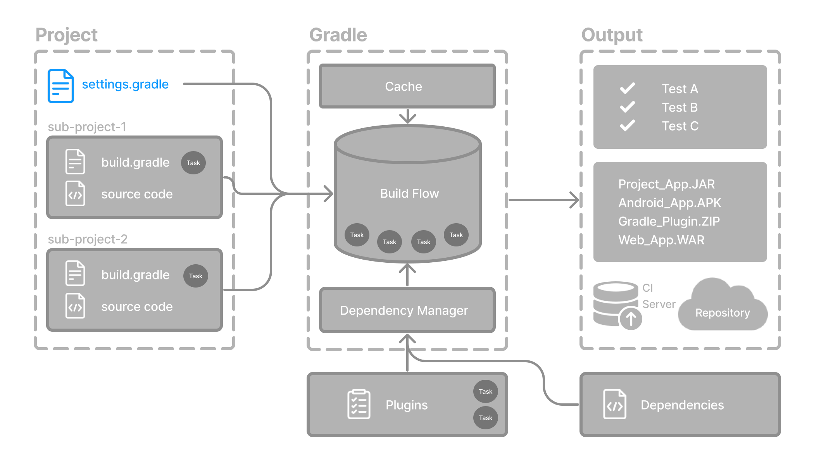

settings 文件（settings.gradle(.kts)）是每个 Gradle 项目的入口。

settings 文件主要用于定义项目结构，通常会将子项目加入构建。因此：
对于单项目构建，settings 文件是可选的。
对于多项目构建，settings 文件是必需的，并且要在其中声明所有子项目。
settings 脚本
settings 文件是一个脚本。它可以是用 Groovy 编写的 settings.gradle 文件，也可以是用 Kotlin 编写的 settings.gradle.kts 文件。
Gradle 脚本只接受 Groovy DSL 和 Kotlin DSL 这两种语言。
settings 文件通常位于项目根目录，因为它定义了构建的结构，例如构建包含哪些项目。如果没有 settings 文件，Gradle 默认会将该构建视为单项目构建。
下面来看一个例子，并逐项说明：
settings.gradle.kts
rootProject.name = "root-project" (1)
include("sub-project-a") (2)
include("sub-project-b")
include("sub-project-c")| 1 | 定义项目名称。 |
| 2 | 添加子项目。 |
settings.gradle
rootProject.name = 'root-project' (1)
include('sub-project-a') (2)
include('sub-project-b')
include('sub-project-c')| 1 | 定义项目名称。 |
| 2 | 添加子项目。 |
1. 定义项目名称
settings 文件定义了项目的名称：
rootProject.name = "root-project"每个构建只有一个根项目。
2. 添加子项目
如果存在子项目，settings 文件会通过包含这些子项目来定义项目结构：
include("sub-project-a")
include("sub-project-b")
include("sub-project-c")settings 脚本会先于所有构建脚本求值，因此适合在这里启用或配置作用于整个构建的功能，例如插件管理、包含其他构建、版本目录等。我们将在高级概念部分进一步介绍这些 Gradle 功能。
根据上面的 settings 文件示例，Gradle 预期的项目结构如下：
.
├── settings.gradle(.kts) (1)
├── sub-project-a
│ └── build.gradle(.kts) (2)
├── sub-project-b
│ └── build.gradle(.kts) (2)
└── sub-project-c
└── build.gradle(.kts) (2)| 1 | settings.gradle(.kts) 文件。 |
| 2 | 三个子项目，每个子项目都有自己的 build.gradle(.kts) 文件。 |
下一步：了解构建脚本 >>